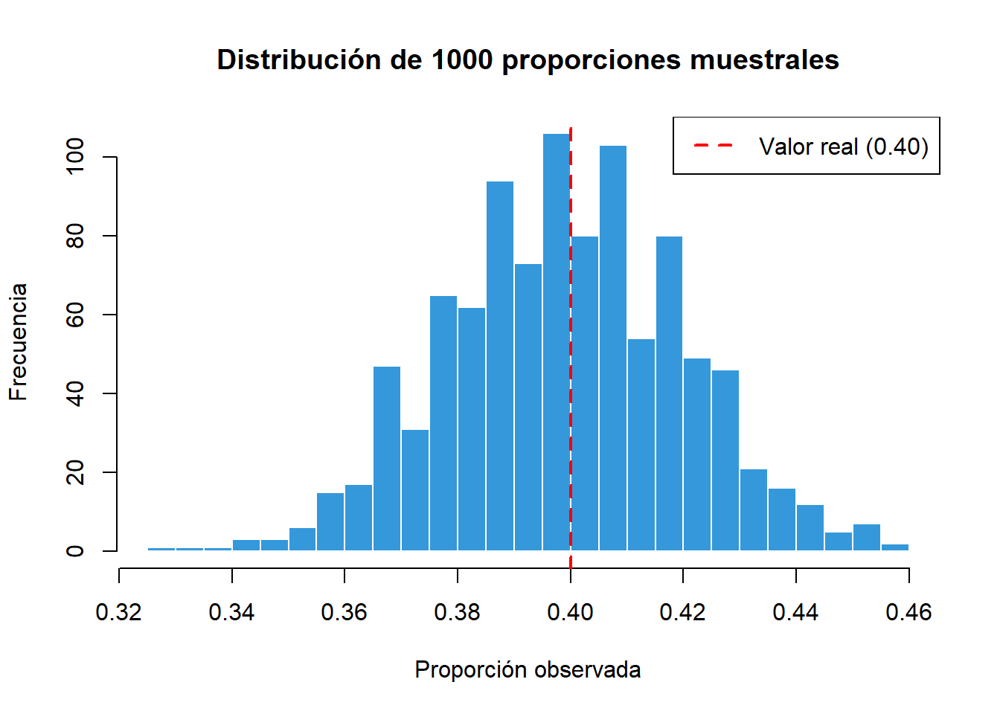
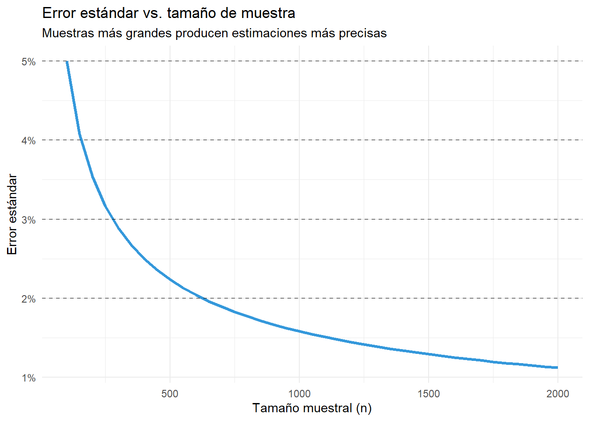
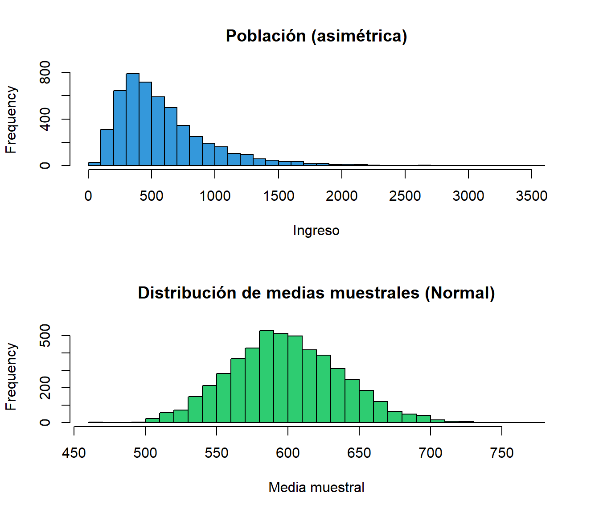
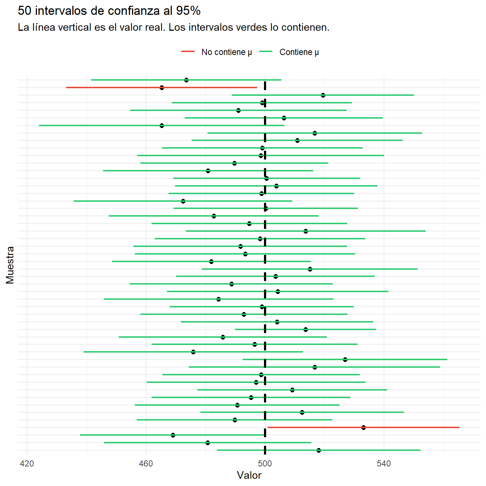

8 Inferencia estadística
Objetivos del capítulo
Al finalizar este capítulo, serás capaz de:
- Comprender la lógica de la inferencia: generalizar desde muestras a poblaciones
- Distinguir entre parámetros poblacionales y estadísticos muestrales
- Entender qué es el error estándar y por qué importa
- Construir e interpretar intervalos de confianza
- Evaluar qué tan grande debe ser una muestra
8.1 El problema central: de muestras a poblaciones
En ciencias sociales casi nunca tenemos acceso a poblaciones completas. Queremos saber cosas como:
- ¿Cuál es el apoyo real a la reforma de pensiones entre todos los chilenos?
- ¿Cuál es el ingreso promedio de hogares en América Latina?
- ¿Qué proporción de electores cambia su voto entre elecciones?
Pero solo podemos encuestar a cientos o miles de personas, no a los millones que componen la población. La inferencia estadística es el proceso de usar datos de una muestra para hacer afirmaciones sobre una población, reconociendo la incertidumbre asociada.
8.1.1 Ejemplo motivador: Encuestas electorales
Antes de las elecciones presidenciales 2021 en Chile (segunda vuelta), múltiples encuestadoras reportaron resultados diferentes:
Preguntas clave:
- ¿Por qué las encuestas difieren si todas miden “lo mismo”?
- ¿Cuán confiables son estos números?
- ¿Qué tan grande debe ser la muestra?
8.2 Muestras y poblaciones: Conceptos básicos
8.2.1 Lo que queremos saber vs. lo que podemos observar
| Concepto | Lo que es | Ejemplo |
|---|---|---|
| Población | El grupo completo que nos interesa | Todos los votantes de Chile (15 millones) |
| Muestra | El subconjunto que realmente observamos | 1,200 personas encuestadas |
| Parámetro | El valor real en la población (desconocido) | El verdadero apoyo a Boric |
| Estadístico | El valor calculado en nuestra muestra | 51% de nuestra muestra apoya a Boric |
NotaLa idea central de la inferencia
Usamos lo que observamos (estadísticos de la muestra) para estimar lo que queremos saber (parámetros de la población).
Pero como la muestra es solo una parte de la población, nuestra estimación tendrá incertidumbre. La inferencia nos ayuda a cuantificar esa incertidumbre.
8.2.2 ¿Por qué diferentes muestras dan diferentes resultados?
Imagina que la población tiene 40% de apoyo a cierta política. Si tomas una muestra de 1,000 personas:
set.seed(2024)
# Población de 10,000 votantes (40% apoya)
poblacion <- c(rep(1, 4000), rep(0, 6000)) # 1 = apoya
p_verdadero <- mean(poblacion)
cat("Valor real en la población: p =", p_verdadero, "(40%)\n\n")Valor real en la población: p = 0.4 (40%)# Tomamos una muestra de n=1000
muestra <- sample(poblacion, size = 1000, replace = FALSE)
p_muestra <- mean(muestra)
cat("Valor en nuestra muestra: p̂ =", p_muestra, "\n")Valor en nuestra muestra: p̂ = 0.418 cat("Diferencia con el valor real:", round((p_muestra - p_verdadero) * 100, 1), "puntos\n")Diferencia con el valor real: 1.8 puntosSi tomamos otra muestra, obtendremos un resultado diferente:
# Otra muestra diferente
muestra2 <- sample(poblacion, size = 1000, replace = FALSE)
cat("Segunda muestra: p̂ =", mean(muestra2), "\n")Segunda muestra: p̂ = 0.403 muestra3 <- sample(poblacion, size = 1000, replace = FALSE)
cat("Tercera muestra: p̂ =", mean(muestra3), "\n")Tercera muestra: p̂ = 0.391 Esta variación entre muestras es normal y esperada. No significa que haya error - es simplemente la naturaleza del muestreo.
8.3 El error estándar: Midiendo la incertidumbre
8.3.1 ¿Qué tan variable es nuestro estadístico?
El error estándar mide cuánto varía típicamente un estadístico de muestra en muestra.
- Error estándar pequeño = Las muestras dan resultados muy similares = Alta precisión
- Error estándar grande = Las muestras dan resultados muy diferentes = Baja precisión
8.3.2 Visualizando la variabilidad
Si tomamos muchas muestras y calculamos la proporción en cada una, obtenemos una distribución:
# Tomamos 1000 muestras de n=500 cada una
set.seed(123)
proporciones <- replicate(1000, mean(sample(poblacion, 500)))
# Visualizamos
hist(proporciones, breaks = 30,
main = "Distribución de 1000 proporciones muestrales",
xlab = "Proporción observada", ylab = "Frecuencia",
col = "#3498db", border = "white")
abline(v = 0.40, col = "red", lwd = 2, lty = 2)
legend("topright", "Valor real (0.40)", col = "red", lty = 2, lwd = 2)
cat("Estadísticas de las 1000 proporciones:\n")Estadísticas de las 1000 proporciones:cat("Promedio:", round(mean(proporciones), 3), "(muy cerca del valor real 0.40)\n")Promedio: 0.399 (muy cerca del valor real 0.40)cat("Desviación estándar:", round(sd(proporciones), 4), "\n")Desviación estándar: 0.021 cat("Esta desviación estándar ES el error estándar\n")Esta desviación estándar ES el error estándar8.3.3 Lo que determina el error estándar
El error estándar depende principalmente de dos factores:
- Tamaño de muestra (n): Muestras más grandes = menor error
- Variabilidad en la población: Más variabilidad = mayor error

ImportanteLa regla del cuatro
Para reducir el error estándar a la mitad, necesitas cuadruplicar el tamaño de la muestra.
- n = 400 → Error ≈ 2.5%
- n = 1,600 → Error ≈ 1.25% (mitad)
- n = 6,400 → Error ≈ 0.625% (cuarta parte)
Esto explica por qué las encuestas típicamente usan 1,000-1,500 personas: es un buen balance entre precisión y costo.
8.3.4 Calculando el error estándar en R
Para una proporción:
# Encuesta: proporción que apoya política X
n <- 1200
apoyos <- 510
p_hat <- apoyos / n
# Error estándar
se_p <- sqrt(p_hat * (1 - p_hat) / n)
cat("Muestra de n =", n, "personas\n")Muestra de n = 1200 personascat("Proporción que apoya:", round(p_hat * 100, 1), "%\n")Proporción que apoya: 42.5 %cat("Error estándar:", round(se_p * 100, 2), "puntos porcentuales\n")Error estándar: 1.43 puntos porcentualesPara una media:
# Datos de ingresos (en miles de pesos)
set.seed(456)
ingresos <- rlnorm(500, meanlog = log(600), sdlog = 0.7)
n <- length(ingresos)
media <- mean(ingresos)
s <- sd(ingresos)
se <- s / sqrt(n)
cat("Muestra de n =", n, "hogares\n")Muestra de n = 500 hogarescat("Ingreso promedio: $", round(media, 0), " mil\n", sep = "")Ingreso promedio: $810 milcat("Desviación estándar de ingresos: $", round(s, 0), " mil\n", sep = "")Desviación estándar de ingresos: $606 milcat("Error estándar de la media: $", round(se, 0), " mil\n", sep = "")Error estándar de la media: $27 mil
NotaError estándar vs. Desviación estándar
No confundas estos conceptos:
| Concepto | Qué mide | En nuestro ejemplo |
|---|---|---|
| Desviación estándar (s) | Cuánto varían los datos individuales | Los ingresos varían ±$480 mil entre hogares |
| Error estándar (SE) | Cuánto varía nuestra estimación del promedio | Nuestra estimación del promedio varía ±$21 mil |
El SE siempre es menor que s (porque promediar reduce la variabilidad).
Nota🎓 Métodos Cuantitativos Avanzados
8.3.5 Fórmulas del error estándar
Para la media: \[\text{SE}(\bar{x}) = \frac{s}{\sqrt{n}}\]
Donde \(s\) es la desviación estándar muestral y \(n\) el tamaño de muestra.
Para una proporción: \[\text{SE}(\hat{p}) = \sqrt{\frac{\hat{p}(1-\hat{p})}{n}}\]
8.3.6 El Teorema del Límite Central
Si tomamos muchas muestras de tamaño \(n\) de cualquier población, la distribución de las medias muestrales:
- Tendrá forma aproximadamente Normal (para \(n \geq 30\))
- Estará centrada en la media poblacional
- Tendrá desviación estándar igual al error estándar
Esto es fundamental porque nos permite usar la distribución Normal para hacer inferencia, sin importar la forma de la distribución original.
# Población muy asimétrica
set.seed(123)
poblacion_ingresos <- rlnorm(100000, meanlog = log(500), sdlog = 0.6)
# Distribución muestral
medias_muestrales <- replicate(5000, mean(sample(poblacion_ingresos, 100)))
par(mfrow = c(2, 1))
hist(sample(poblacion_ingresos, 5000), breaks = 50,
main = "Población (asimétrica)", xlab = "Ingreso", col = "#3498db")
hist(medias_muestrales, breaks = 40,
main = "Distribución de medias muestrales (Normal)",
xlab = "Media muestral", col = "#2ecc71")
par(mfrow = c(1, 1))8.4 Intervalos de confianza
8.4.1 ¿Qué es un intervalo de confianza?
En lugar de dar una sola estimación (“el apoyo es 45%”), un intervalo de confianza da un rango de valores plausibles (“el apoyo está entre 42% y 48%”).
Este rango incorpora la incertidumbre debida al muestreo.
8.4.2 La lógica del intervalo de confianza
Un intervalo de confianza al 95% se construye de manera que, si repitieras el muestreo muchas veces:
- Aproximadamente 95% de los intervalos contendrían el valor verdadero
- Aproximadamente 5% no lo contendrían
# Parámetro verdadero
mu_real <- 500
n <- 50
# Tomamos 50 muestras y construimos IC para cada una
set.seed(2025)
resultados <- data.frame(
muestra = 1:50,
media = numeric(50),
ic_inf = numeric(50),
ic_sup = numeric(50)
)
for (i in 1:50) {
datos <- rnorm(n, mean = mu_real, sd = 120)
test <- t.test(datos, conf.level = 0.95)
resultados$media[i] <- mean(datos)
resultados$ic_inf[i] <- test$conf.int[1]
resultados$ic_sup[i] <- test$conf.int[2]
}
resultados$contiene <- (resultados$ic_inf <= mu_real & resultados$ic_sup >= mu_real)
cat("De 50 intervalos de confianza al 95%:\n")De 50 intervalos de confianza al 95%:cat(sum(resultados$contiene), "contienen el valor verdadero (μ = 500)\n")48 contienen el valor verdadero (μ = 500)cat("Eso es el", round(mean(resultados$contiene) * 100), "%\n")Eso es el 96 %
AdvertenciaInterpretación correcta del IC
INCORRECTO: “Hay 95% de probabilidad de que el valor real esté en este intervalo”
CORRECTO: “Si repitiéramos este proceso muchas veces, aproximadamente 95% de los intervalos contendrían el valor real”
El valor real es fijo (aunque desconocido). Lo que varía es el intervalo de muestra en muestra.
8.4.3 Calculando intervalos de confianza en R
Para una media: usar t.test()
# Datos de ingresos
set.seed(789)
ingresos <- rlnorm(200, meanlog = log(550), sdlog = 0.65)
# Intervalo de confianza
resultado <- t.test(ingresos, conf.level = 0.95)
resultado
One Sample t-test
data: ingresos
t = 19.732, df = 199, p-value < 2.2e-16
alternative hypothesis: true mean is not equal to 0
95 percent confidence interval:
587.9537 718.5166
sample estimates:
mean of x
653.2351 Cómo leer el output de t.test():
| Elemento | Significado |
|---|---|
t = 47.066 |
Estadístico de prueba (lo usaremos en el próximo capítulo) |
df = 199 |
Grados de libertad |
95 percent confidence interval |
El intervalo de confianza |
mean of x |
La media de nuestra muestra |
cat("Interpretación:\n")Interpretación:cat("El ingreso promedio en nuestra muestra es $", round(mean(ingresos), 0), " mil\n", sep = "")El ingreso promedio en nuestra muestra es $653 milcat("Estamos 95% confiados de que el promedio poblacional está entre\n")Estamos 95% confiados de que el promedio poblacional está entrecat("$", round(resultado$conf.int[1], 0), " y $", round(resultado$conf.int[2], 0), " mil\n", sep = "")$588 y $719 milPara una proporción: usar prop.test()
# 780 de 1500 encuestados declaran que votarán
resultado_prop <- prop.test(x = 780, n = 1500, conf.level = 0.95)
resultado_prop
1-sample proportions test with continuity correction
data: 780 out of 1500, null probability 0.5
X-squared = 2.3207, df = 1, p-value = 0.1277
alternative hypothesis: true p is not equal to 0.5
95 percent confidence interval:
0.4943652 0.5455312
sample estimates:
p
0.52 cat("Interpretación:\n")Interpretación:cat("El", round(780/1500 * 100, 1), "% de nuestra muestra declara que votará\n")El 52 % de nuestra muestra declara que votarácat("IC 95%: entre", round(resultado_prop$conf.int[1] * 100, 1),
"% y", round(resultado_prop$conf.int[2] * 100, 1), "%\n")IC 95%: entre 49.4 % y 54.6 %8.4.4 Diferentes niveles de confianza
No estamos limitados a 95%. Podemos construir intervalos con cualquier nivel:
# El mismo dato con diferentes niveles de confianza
datos <- ingresos
ic_90 <- t.test(datos, conf.level = 0.90)$conf.int
ic_95 <- t.test(datos, conf.level = 0.95)$conf.int
ic_99 <- t.test(datos, conf.level = 0.99)$conf.int
cat("Intervalos de confianza para el ingreso promedio:\n\n")Intervalos de confianza para el ingreso promedio:cat("IC 90%: [", round(ic_90[1], 0), ", ", round(ic_90[2], 0), "] - Ancho:", round(ic_90[2] - ic_90[1], 0), "\n")IC 90%: [ 599 , 708 ] - Ancho: 109 cat("IC 95%: [", round(ic_95[1], 0), ", ", round(ic_95[2], 0), "] - Ancho:", round(ic_95[2] - ic_95[1], 0), "\n")IC 95%: [ 588 , 719 ] - Ancho: 131 cat("IC 99%: [", round(ic_99[1], 0), ", ", round(ic_99[2], 0), "] - Ancho:", round(ic_99[2] - ic_99[1], 0), "\n")IC 99%: [ 567 , 739 ] - Ancho: 172
NotaEl trade-off confianza vs. precisión
- Mayor confianza (99% vs 95%) → Intervalo más ancho (menos preciso)
- Menor confianza (90% vs 95%) → Intervalo más angosto (más preciso)
El 95% es una convención que balancea ambos aspectos.
8.5 ¿Qué tan grande debe ser la muestra?
8.5.1 El margen de error en encuestas
Cuando una encuesta reporta “margen de error ±3%”, esto se refiere al error estándar multiplicado aproximadamente por 2 (para obtener un IC al 95%).
| Tamaño de muestra | Margen de error aproximado (IC 95%) |
|---|---|
| 400 | ±5% |
| 600 | ±4% |
| 1,000 | ±3% |
| 1,500 | ±2.5% |
| 2,400 | ±2% |
8.5.2 ¿Por qué no encuestar a más personas?
Porque la precisión aumenta lentamente después de cierto punto:
- Pasar de n=400 a n=1,600 (×4) reduce el error a la mitad
- Pasar de n=1,600 a n=6,400 (×4) reduce el error a la mitad otra vez
El costo aumenta linealmente, pero la precisión mejora con la raíz cuadrada. Por eso 1,000-1,500 es el “punto dulce” para encuestas típicas.
Nota🎓 Métodos Cuantitativos Avanzados
8.5.3 Fórmulas para el intervalo de confianza
Para la media (n grande o datos normales): \[\text{IC}_{95\%} = \bar{x} \pm 1.96 \times \frac{s}{\sqrt{n}}\]
Para la proporción: \[\text{IC}_{95\%} = \hat{p} \pm 1.96 \times \sqrt{\frac{\hat{p}(1-\hat{p})}{n}}\]
Donde 1.96 es el valor crítico de la distribución Normal para 95% de confianza.
8.5.4 Determinación del tamaño muestral
Para proporciones, si quieres un margen de error \(E\) con confianza 95%:
\[n = \left(\frac{1.96}{E}\right)^2 \times 0.25\]
Usando \(p = 0.5\) (el caso más conservador).
| Margen deseado | n necesario |
|---|---|
| ±5% | 385 |
| ±3% | 1,068 |
| ±2% | 2,401 |
| ±1% | 9,604 |
Para medias: \[n = \left(\frac{1.96 \times \sigma}{E}\right)^2\]
Donde \(\sigma\) es la desviación estándar poblacional (estimada de estudios previos).
Resumen: Conceptos clave
8.5.5 Vocabulario esencial
| Concepto | Significado | Ejemplo |
|---|---|---|
| Parámetro | Valor real en la población | El verdadero % que apoya una política |
| Estadístico | Valor calculado en la muestra | El 45% que observamos en nuestra encuesta |
| Error estándar | Cuánto varía el estadístico entre muestras | ±3 puntos porcentuales |
| Intervalo de confianza | Rango de valores plausibles para el parámetro | Entre 42% y 48% |
8.5.6 Funciones en R
| Situación | Función | Ejemplo |
|---|---|---|
| IC para una media | t.test(datos) |
t.test(ingresos) |
| IC para una proporción | prop.test(éxitos, n) |
prop.test(450, 1000) |
| Cambiar nivel de confianza | Agregar conf.level |
t.test(datos, conf.level = 0.99) |
8.5.7 Ideas principales
- El muestreo tiene incertidumbre: Diferentes muestras dan diferentes resultados
- El error estándar cuantifica esa incertidumbre: Mide cuánto varían los estadísticos
- Muestras más grandes = menos incertidumbre: Pero con rendimientos decrecientes
- El intervalo de confianza da un rango: Más informativo que un solo número
Lecturas recomendadas
Fundamentos de inferencia estadística:
Agresti, A., & Finlay, B. (2009). Statistical Methods for the Social Sciences (4th ed.). Pearson. → Capítulo 5 cubre estimación estadística e intervalos de confianza con claridad ejemplar.
Aplicaciones en análisis de datos sociales:
Llaudet, E., & Imai, K. (2022). Data Analysis for Social Science: A Friendly and Practical Introduction. Princeton University Press. → Capítulo 7 sobre incertidumbre conecta teoría con aplicaciones prácticas.
Recurso complementario de acceso libre:
Diez, D., Barr, C., & Çetinkaya-Rundel, M. (2019). OpenIntro Statistics (4th ed.). [Disponible gratis en https://www.openintro.org/book/os/] → Capítulo 4 sobre fundamentos de inferencia, con ejercicios interactivos.
Ejercicios
1. Error estándar
Una encuesta con n=900 encuentra que 43% apoya una reforma.
- Calcula el error estándar de la proporción
- ¿Cómo cambiaría el SE si la muestra fuera de n=400?
- ¿Cuántas personas necesitarías encuestar para reducir el SE a la mitad?
2. Intervalos de confianza para proporciones
En una encuesta de 1,200 votantes, 528 declaran que votarán en las próximas elecciones.
- Usa
prop.test()para calcular el IC 95% - Interpreta el intervalo en lenguaje no técnico
- ¿Podemos afirmar que “menos de la mitad votará”?
3. Intervalos de confianza para medias
set.seed(456)
ingresos <- rlnorm(50, meanlog = log(550), sdlog = 0.6)- Usa
t.test()para calcular el IC 95% - Calcula también el IC 90% y 99%
- ¿Qué observas sobre el ancho de los intervalos?
4. Interpretación de resultados
Un informe de encuesta reporta: “El 47% de los chilenos aprueba la gestión del gobierno, con un margen de error de ±3 puntos porcentuales.”
- ¿Cuál es el intervalo de confianza implícito?
- ¿Podemos concluir que “la mayoría desaprueba”? Justifica
- Si otra encuesta reporta 49% de aprobación, ¿son los resultados contradictorios?
5. Simulación
set.seed(2024)
mu_real <- 100
# Toma 100 muestras y construye IC para cada una
resultados <- replicate(100, {
muestra <- rnorm(50, mean = mu_real, sd = 15)
t.test(muestra)$conf.int
})- ¿Cuántos de los 100 ICs contienen el valor real (μ = 100)?
- ¿Es este resultado cercano al 95% esperado?